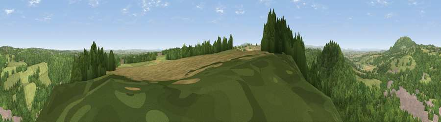

Viewpoint near Benthall
#17107 in England · top 49% of its area beats it · near BenthallThe view, rendered

A 360° render of this exact spot computed from the terrain model, tree cover and land cover — summer colours, afternoon light, calibrated against photographs of famous viewpoints. Real trees, hedges and buildings will differ in detail.
The panorama
Grey silhouette: terrain skyline in each direction (720 bearings, Earth curvature and refraction included). Dashed green: skyline with trees (+15 m) and buildings (+8 m) as obstacles. Blue strip: how far the ground is visible on each bearing.
Where the view opens
Wedge length = distance to the farthest visible ground on that bearing (vegetation-aware). Rings at 10, 25 and 50 km.
What fills the view
73% woodland · 15% grassland · 7% built-up · 4% cropland · 1% bare ground ·
Angular shares of the visible panorama (visual magnitude), not map area. Landscape diversity 0.39 (0–1 Shannon).
Key numbers
More beautiful places nearby
The staircase of upgrades: each row has a higher view potential than everything closer. Driving times are estimates from straight-line distance, calibrated against real road routing — check an actual route before setting out.
| Place | Direction | Drive | Score |
|---|---|---|---|
| Viewpoint near Homer | WSW · 3 km | ~7 min | 71.9 |
| Viewpoint near Homer | WSW · 5 km | ~11 min | 74.5 |
| Viewpoint near Little Wenlock | NW · 6 km | ~12 min | 86.6 |
| North Hill | SSE · 58 km | ~80 min | 86.8 |
| Worcestershire Beacon | S · 59 km | ~81 min | 87.1 |
| Viewpoint near West Quantoxhead | SSW · 169 km | ~191 min | 87.9 |
| Viewpoint near West Quantoxhead | SSW · 170 km | ~191 min | 88.7 |
| Holdstone Hill | SSW · 187 km | ~206 min | 90.2 |
52.62525, -2.50703 · source: screening · position refined by local search. Computed location — check access rights before visiting.